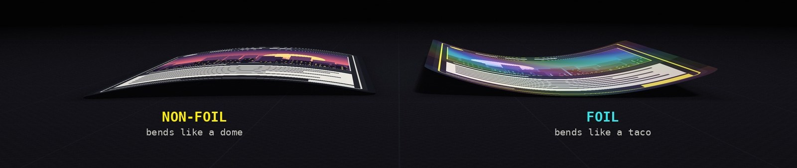

Are your cards curving?
Why it happens and what to do
What's inside a card, why foils and non-foils bend differently, and how to keep bulk, decks and chase cards flat.
The short version
Foils curl because the foil layer barely reacts to moisture while the paper does. Keep the air steady at 45–60%, keep cards packed tight, and protect each card for what it's worth.
01What is card curving?
Card curving (players call it "pringling") is when a card slowly bends into a shallow arch instead of lying flat. It often isn't there when you open a pack, although foils sometimes come out already bent. Cards in a sealed pack are pressed together and haven't met your room's air yet. Once they're loose, they adjust to your home over days or weeks, and that's when the bend shows up.
In tournament play, a noticeably curved card can be treated as a marked card, even inside a sleeve, because it can be told apart from the rest of the deck.
02What's inside a card
A trading card isn't one sheet of paper. It's a sandwich. Two paper layers are glued around a dark core layer (often called the "black core") that stops light shining through, so nobody can read your card from the back. Ink and a thin protective coating sit on both faces.
A foil card has one extra ingredient: a thin metallic plastic film bonded to the front, with the art printed on top of it. That one layer is the root of the whole problem.
Non-foil card
Foil card
03Why foils curve so much more
Paper behaves like a sponge. In humid air it soaks up moisture and grows a tiny bit. In dry air it gives moisture away and shrinks. If both sides of a card grow and shrink together, the card stays flat.
Foil cards: the foil film barely reacts to moisture. It stays the same size while the paper back grows and shrinks, so the card bends.
Non-foil cards: with paper on both sides, they move more evenly and curl much less. When they do curve, it's usually because one side got more air than the other (the top card of a stack, a binder page near a window), and the bend is gentler. It can even run the opposite way to a foil in the same room.

| Room air | What the foil does | What helps |
|---|---|---|
| Too dry | Paper back shrinks, the face bulges out and the edges curl backward | Add a little moisture (a two-way humidity pack) |
| Too humid | Paper back swells and the edges curl up toward the face | Remove moisture (silica gel) |
| Stable, 45–60% | Stays flat, or slowly flattens again | Keep it that way |
04Keeping cards flat
Match the protection to the card.
Bulk cards
- Pack them snug and upright in a storage box so they support each other.
- Keep the box in a sealed tub with a cheap hygrometer. Aim for 45–60% and keep it steady.
- Humid room? Add rechargeable silica packs. Dry room? Use a two-way humidity pack instead.
- Keep it away from windows, heaters, AC vents and damp basements.
Your constructed deck
- Double sleeve for less air contact and more stiffness.
- Use a snug deck box with no empty space.
- If cards start to bow, press the deck flat under a heavy book overnight. Fix the humidity too, or the curl comes back.
- Keep a two-way humidity pack (49% or 58%) in the deck box or bag. It adds or removes moisture as needed.
Expensive chase cards
- A penny sleeve (or perfect-fit inner sleeve), then a toploader or magnetic one-touch. A snug holder stops it bending further.
- Store them upright in a sealed case with a two-way humidity pack.
- Already curved? Move it to steady 45–60% air (the table above shows if it needs moisture added or removed) and keep light, even pressure on it, such as inside a one-touch. Give it days, not hours. Never use heat or bend it back by hand. Test on a cheap foil first.